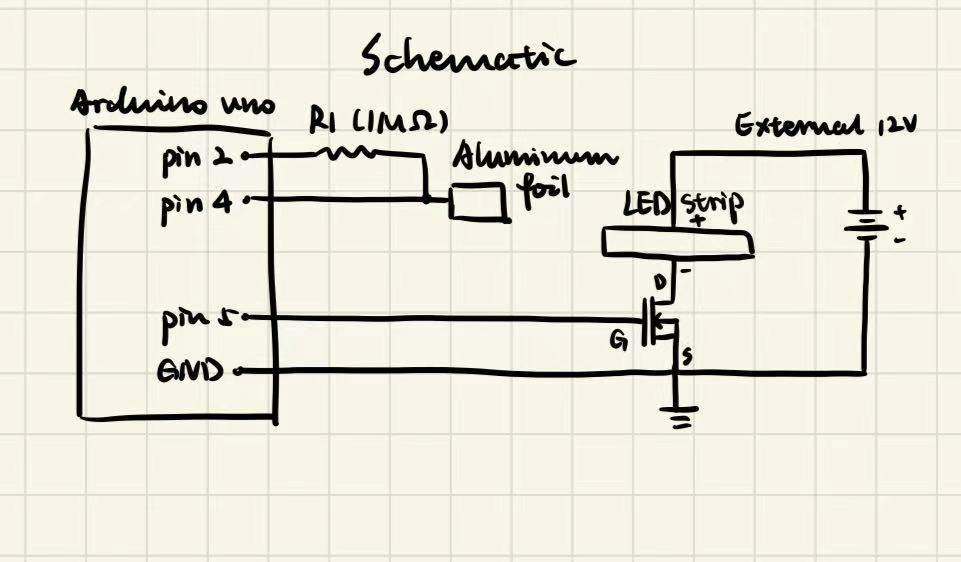
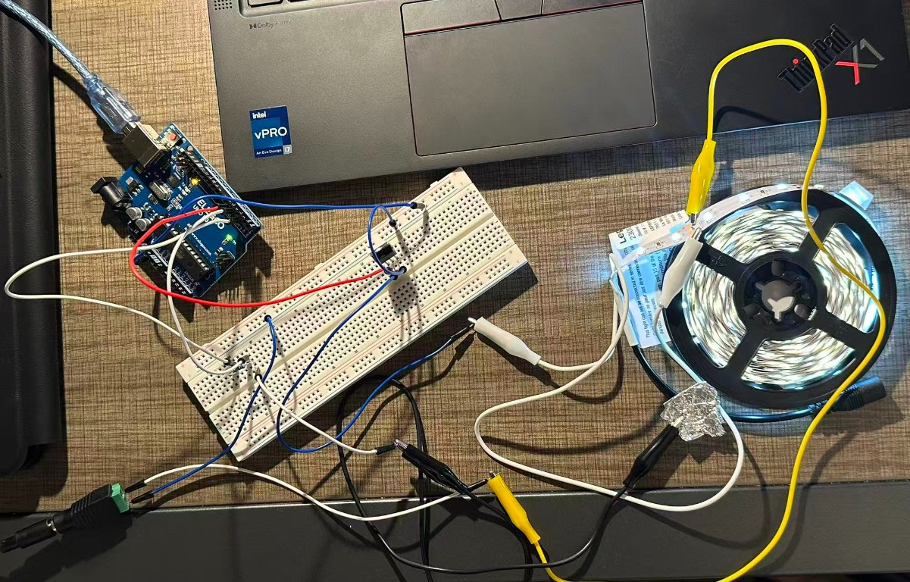
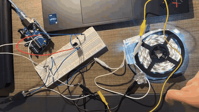
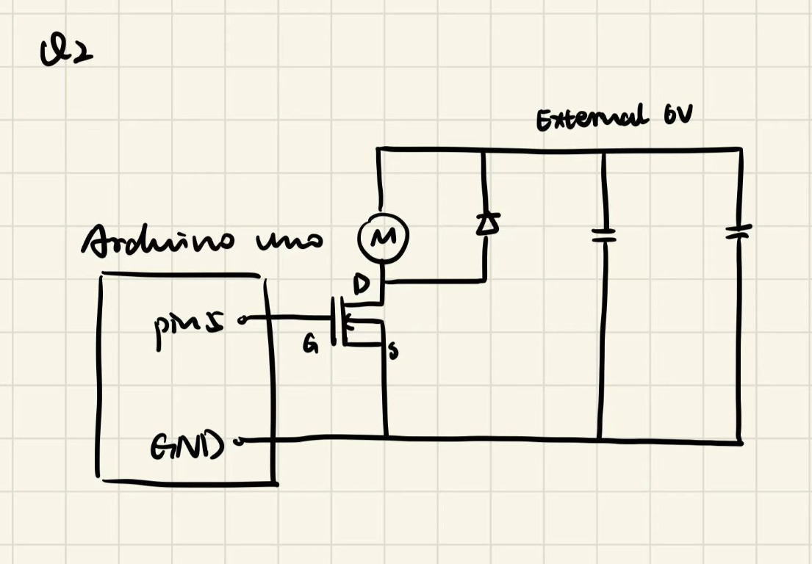
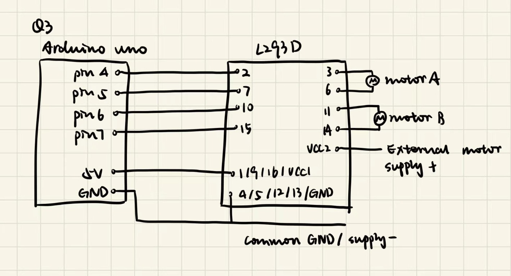

I used an aluminum-foil touch pad to dim and brighten a 12 V LED strip through an IRLZ44N MOSFET. The Arduino reads touches with the CapacitiveSensor library and controls the strip with PWM on D5.

Arduino D2 connects through a 1 MΩ resistor to the D4 node, and the foil clips to that same node. The resistor makes the charge time long enough for the Arduino to detect a change when I touch the foil.
Arduino D5 connects to the IRLZ44N gate. The LED strip negative connects to the drain, and the source connects to common ground. The strip positive connects to the external 12 V supply. Arduino GND and supply negative are connected, and the Arduino itself is powered over USB.
D5 switches between about 0 V and 5 V relative to the source. When the MOSFET is on during a PWM pulse, the strip has approximately 12 V across it. Load current flows from the external supply, through the strip and MOSFET, and back to supply ground.

The strip label identifies it as a Lepro PR4100057-DW-US, 5 m, rated 12 V DC and 1.5 A. This is the manufacturer's full-strip rating, not a measurement of my actual load current; I did not measure the current.
The LED strip is rated for 12 V and 1.5 A, so I used 1.5 A for my estimate. When D5 is HIGH, the MOSFET gate is about 5 V above its source. Using 0.025 Ω for the estimate, the voltage drop across the MOSFET is 1.5 A × 0.025 Ω ≈ 0.038 V. That leaves about 12 V across the strip while the MOSFET is on. I used the rating on the strip label for this calculation.
The sketch reads the foil with CapacitiveSensor and changes the LED strip brightness using analogWrite() on D5. I kept the uploaded sketch's pins, values, and behavior.
Download the full sketch, HCDE439_A5.ino
// Load the library for the foil sensor.
#include <CapacitiveSensor.h>
// Send on D2 and read the foil on D4.
CapacitiveSensor touchPad(2, 4);
// Use D5 to drive the MOSFET gate.
const int stripPin = 5;
// Use 1000 as the cutoff for a touch.
const long touchThreshold = 1000;
// Set the PWM value for the dim setting.
const int dimLevel = 40;
// Set the PWM value for the bright setting.
const int brightLevel = 200;
// Set up the output and Serial Monitor.
void setup() {
// Set the output latch LOW before enabling the output.
digitalWrite(stripPin, LOW);
// Make D5 an output so it drives the gate LOW.
pinMode(stripPin, OUTPUT);
// Send readings to the Serial Monitor at 9600 baud.
Serial.begin(9600);
}
// Read the foil and update the strip.
void loop() {
// Take 30 samples for one reading.
long reading = touchPad.capacitiveSensor(30);
// Print the reading to check the threshold.
Serial.println(reading);
// Check for a sensor error.
if (reading < 0) {
// Turn off the strip.
analogWrite(stripPin, 0);
}
// Check whether the reading reaches the touch threshold.
else if (reading >= touchThreshold) {
// Use the bright setting.
analogWrite(stripPin, brightLevel);
}
// Handle valid readings below the threshold.
else {
// Use the dim setting.
analogWrite(stripPin, dimLevel);
}
// Wait 20 ms before reading again.
delay(20);
}My untouched readings were about 18–28, and touched readings were about 2302–4394. The threshold of 1000 falls between those readings. The sketch takes 30 samples per sensor reading and prints each reading at 9600 baud.
I used a PWM value of 40 (about 16% duty cycle) to keep the strip dim when the foil is untouched, and 200 (about 78%) to make it brighter when I touch it. In setup(), D5 starts as an input. I set it up so that when pinMode() switches D5 to an output, it starts driving LOW and turns the MOSFET off.

For the TO-220 package, pin 2 is the drain and pin 3 is the source. The datasheet lists a continuous drain-current absolute maximum of 47 A at TC = 25 °C and VGS = 10 V. This is a maximum under the datasheet's stated case-temperature and gate-voltage conditions, not a general operating-current target.

In this proposed circuit, the motor is between +6 V and the MOSFET drain, with the source at common ground. The flyback diode is across the motor, with its cathode toward +6 V. The 100 µF electrolytic and 100 nF ceramic capacitors are both across +6 V and common ground.

Pins 1 and 9 (enables) and pin 16 (VCC1) connect to Arduino 5 V. Pin 8 (VCC2) connects to the external motor-supply positive. Pins 4, 5, 12, and 13 share ground with Arduino GND and the motor-supply negative. I define forward as HIGH/LOW on a motor's input pair and backward as LOW/HIGH.
function bothForward():
MotorA: D4 = HIGH; D5 = LOW
MotorB: D6 = HIGH; D7 = LOW
function bothBackward():
MotorA: D4 = LOW; D5 = HIGH
MotorB: D6 = LOW; D7 = HIGH
function motorAForward_motorBBackward():
MotorA: D4 = HIGH; D5 = LOW
MotorB: D6 = LOW; D7 = HIGH
function motorABackward_motorBForward():
MotorA: D4 = LOW; D5 = HIGH
MotorB: D6 = HIGH; D7 = LOWI used ChatGPT to check my schematics and help me work through Q2 and Q3. For Q2, it helped me check which way the flyback diode should face and where to connect the capacitors. For Q3, it helped me check the L293D pin connections and match the HIGH and LOW inputs in my pseudocode to each motor’s direction. I also used ChatGPT to make my explanations clearer and Codex to revise the code for my portfolio page. ChatGPT was most helpful when I was trying to connect the diagrams to what the components actually do. In Q2, I learned that the flyback diode gives the motor current a path when the MOSFET switches off. In Q3, tracing the inputs and outputs on my schematic helped me see why swapping HIGH and LOW reverses the motor.